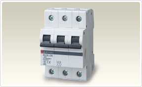

Product Features

Types of Low-voltage Circuit Breakers
The following IEC Standards apply to low-voltage circuit breakers.
There are multiple product standards for the same type of device.
The standards system applies to industrial use (a skilled person handling the device) and household use (a person handling device has no experience.)
| Typical abbreviation |
IEC standard | Mitsubishi Models | |
|---|---|---|---|
| MCCB, ACB |
IEC 60947-2 | Low-voltage switchgear and control gear - Part 2: Circuit-breakers |
NF type low-voltage circuit breaker AE type low-voltage air circuit breaker |
| ELCB | IEC 60947-2 Annex B |
Low-voltage switchgear and control gear - Part 2: Circuit-breakers Annex B: Circuit-breakers incorporating residual current protection |
NV type earth leakage circuit breaker |
| MCB | IEC 60898-1/-2 | Circuit-breakers for overcurrent protection for household and similar installations | BH-D, BHW-T type miniature circuit breaker |
| RCCB | IEC 61008-1 | Residual current operated circuit-breakers without integral overcurrent protection for household and similar uses (RCCBs) | BV-D, BVW-T type earth leakage circuit breaker |
| RCBO | IEC 61009-1 | Residual current operated circuit-breakers with integral overcurrent protection for household and similar uses (RCBOs) | BV-DN type earth leakage circuit breaker |
| CBE | IEC 60934 | Circuit-breakers for equipment | CP type circuit protector |
- ACB: Air Circuit Breaker
- MCCB: Molded Case Circuit Breaker
- ELCB: Earth-Leakage Circuit Breaker
- MCB: Miniature Circuit Breaker
Product list
Air Circuit Breakers AE-SW
The air circuit breakers are ideal as a main circuit breaker and realize the advancement of power distribution equipment.
The air circuit breaker has a wide characteristics adjustment width, high performance operating durability and a high rated short-time current carrying capacity and has a variety of accessories available.
It is therefore used widely as the main circuit breaker for buildings and factories and as the breaker for marine vessels.
Molded Case Circuit Breakers NF
We have prepared the optimal products for overload and short-circuiting protection for low voltage circuits.
Our latest WS-V Series of breakers is a range of products with wide variation that has been designed to maximize the ease of use, including with the "F Style" products with compact external dimensions.
Earth Leakage Circuit Breakers NV
Wide assorted products which is suitable for protections of an overload, a short circuit and an electric shock in low voltage circuit.
Our earth leakage breakers have characteristics (DPDC surge discrimination circuits) that reduce the risk of malfunction due to harmonics or surges.
Furthermore, the CE compliant and UL listed NV devices at 250A or below have Type A electrical leakage characteristics.
Miniature Circuit Breakers BH-D, BV-D, KB-D

In addition to overload and short-circuit protection for low voltage circuits, we also have the optimal products for earth leakage protection.
Mainly they are used for household and similar installations.
These are compact breakers from 0.1 to 63 A for installation on 35 mm IEC rails.
These are widely used on control panel and power distribution panel branch circuits.
Circuit Breakers for Equipment CP
There is a full range of compact products that are suitable for use as built-in components on devices.
In addition to applications in panels such as control panels, these compact products are also suitable for inclusion inside devices. The thin type circuit protector measuring 17.5 mm per pole is a breaker that is suitable for use as a built-in component.
Molded Case Circuit Breakers and Switches for DC circuit (up to 1000VDC) NF-HD
These are ideal for photovoltaic power generation system connection boxes, power collection boxes and power conditioners.
The no fuse switches and no fuse breakers for high voltage DC are mainly used on connection boxes, power collection boxes and power conditioners in photovoltaic power generation systems. They are also used to achieve a higher efficiency power supply in high voltage DC power supply systems (HVDC) at data centers.
UL 489 Listed Circuit Breakers
This is best choice for overcurrent protection of North American countries.
These breakers comply with American UL standard and Canadian CSA standard, and are listed by UL. These breakers are suitable for a feeder or a branch circuit protection.
Molded Case Circuit Breakers with MDU with MDU
A wide variety of circuit monitoring is achieved in a compact space and with little installation work.
This is a breaker (no fuse breaker, earth leakage breaker, earth leakage alarm breaker) that integrates a breaker and an MDU (Measuring Display Unit) that measures, displays and communicates the circuit information.
Circuit Breakers for Use in Particular Applications
We contribute to the advancement of electrical facilities with products that support a wide variety of specifications and applications.
The application specific breakers are products for use in cases when the load type, characteristics or conditions mean that the standard no fuse breaker or earth leakage breaker products (with standard specifications) are not the optimal selection.
Circuit Breakers for Panelboard and Control board
The range of products with compact external dimensions makes it possible to select the optimal product for the facilities.
These are various types of breaker for power distribution panels and control panels. We have a range of products with comparatively small external dimensions, so it is possible to select the optimal product for the conditions on the facility of application.
Earth Leakage Relays
The Earth Leakage Relays combined with ZCT can detect and output signal when earth leakage is occurred.
When an alarm is output, a judgment is made on whether to continue the operation or to stop the circuit concerned, depending on the situation.
Accessories and Related Components
The functions of electrical facilities and breakers are extended.
We also have a large lineup of accessories for breakers. These are optional items that improve facility status monitoring, safety and ease of use.